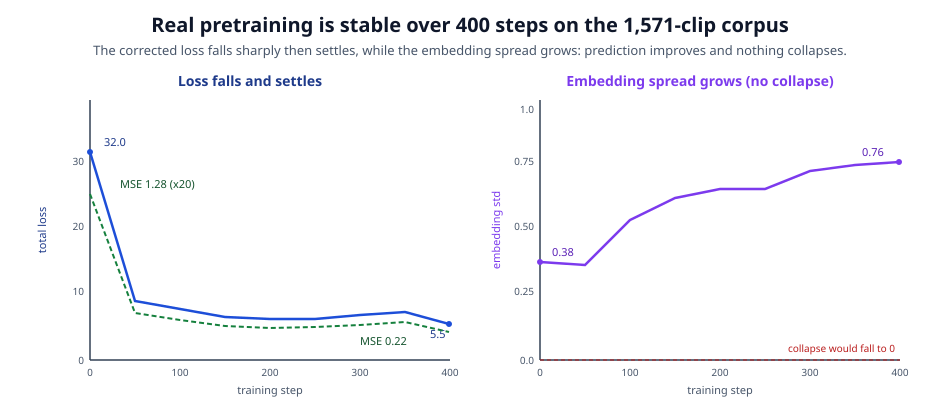

Gait-JEPA: Self-Supervised Pose-Sequence Representation Learning for Clinical Gait Classification on GAVD
I. Introduction
Gait, the way a person walks, carries a large amount of clinical information. A stroke can leave one knee stiff, Parkinson's disease often begins on one side of the body and produces an asymmetric stride, and a myopathy changes how the legs bear load. Clinicians read these patterns by eye, and a long line of machine-learning work has tried to read them automatically. The recurring obstacle is labels.
Recording a walking video is easy. Obtaining a walking video that a clinician has annotated with a diagnosis is slow and expensive. That is the label-scarcity problem. On the Gait Abnormality in Video Dataset (GAVD), the prior supervised baseline is a random forest with 100 trees trained on 82 hand-engineered gait features under a 70/30 split, reaching a best test accuracy of 76 percent across five gait classes [4]. Chance on five classes is 20 percent, so 76 percent is a real, hard-won result and it is our reference point.
Self-supervised learning offers a different route. Instead of waiting for labels, an encoder can learn the structure of walking, the shapes limbs make and the way motion coordinates across the body, from unlabeled video alone. The few labels that exist then only need to name what the encoder already represents. This is the promise of the Joint-Embedding Predictive Architecture (JEPA) family [1], [2], [6]: predict missing content in a learned latent space rather than in pixel space, so that the model spends its capacity on meaning rather than on rendering fine texture.
We apply this idea to pose sequences and call the result Gait-JEPA. The method flavor is a skeleton JEPA: it consumes tracked skeleton joints over time, not raw pixels. We pretrain on all of GAVD without labels, then freeze the encoder and fit a small probe. Our contributions are:
- A full-dataset skeleton-JEPA pipeline for GAVD, from bulk video download through pose extraction, corpus windowing, latent-space pretraining, and a frozen-probe evaluation, with the exact dataset funnel reported honestly.
- A corrected training objective (LayerNorm-normalized EMA target plus online-only VICReg) that is stable over a full 400-step real run, and a documented account of two engineering bugs found while scaling.
- An explicit, foregrounded measurement of window leakage: per-clip probing reports 0.88 to 0.92 accuracy, but a leakage-free per-sequence split gives only 0.49 on 42 sequences, and we present both numbers everywhere.
- A set of research questions (probe accuracy, label efficiency, recoverability of clinical scalars, and a VICReg anti-collapse ablation) evaluated on real data.
II. Related Work
I-JEPA [1] introduced joint-embedding predictive architectures for images: predict the representations of masked target blocks from a context block, in latent space, avoiding pixel reconstruction. V-JEPA [2] extended the idea to video and contributed the design of normalizing the target with a LayerNorm before computing the prediction loss, which we adopt directly. VICReg [3] regularizes representations with variance, invariance, and covariance terms to prevent collapse without negative pairs; we use a light online-only version of its variance and covariance terms. GAVD [4] is the dataset and supervised baseline we build on, contributing the 82-feature random-forest classifier that reaches 76 percent. BlazePose [5] is the on-device pose estimator that produces the 33-joint skeletons we operate on. Finally, LeCun's world-model position paper [6] frames JEPAs as a path toward predictive world models, which motivates learning in a latent space that captures the structure of motion.
III. Dataset
GAVD (Gait Abnormality in Video Dataset) is an open pool of annotated walking clips sourced from YouTube and organized as comma-separated-value files [4]. Each CSV is one sequence: a run of frames from a single YouTube video with per-frame annotations. The dataset holds 374 sequence CSVs across 11 condition folders, 91,624 frame-rows, with a mean of 245 frames per sequence.
The pipeline narrows this pool at every stage, and we report the funnel exactly (Fig. 1). Of the 374 sequences, 69 unique YouTube videos are referenced, because many sequences share a video. Of those 69, 67 downloaded successfully (2 links were dead or blocked). Real BlazePose skeletons were successfully extracted for 227 sequences. The manifest marks 68 sequences as the intended 5-class labeled subset, but only 42 survived download and extraction to reach the labeled holdout. Windowing the 227 extracted skeletons (T = 32 frames, overlapping) yields an unlabeled pretraining corpus of 1,571 clips of shape (32, 33, 3); this is the bank the encoder pretrains on, with no labels. The 42 labeled sequences yield 296 windowed clips, a mean of 7.0 windows per sequence (range 1 to 60).

Table I gives the per-condition counts. The abnormal and style pools dominate the raw dataset, while several clinical conditions are represented by only a handful of sequences. The labeled subset that reaches evaluation is small and imbalanced, which is central to interpreting the results.
TABLE I
GAVD Per-Condition Counts and the Labeled Subset
| Condition | CSVs | Extracted | Labeled seq | Labeled windows |
|---|---|---|---|---|
| abnormal | 190 | 118 | -- | -- |
| antalgic | 4 | 2 | -- | -- |
| cerebral palsy | 16 | 4 | 4 | 24 |
| exercise | 24 | 18 | -- | -- |
| inebriated | 2 | 1 | -- | -- |
| myopathic | 47 | 33 | 12 | 69 |
| normal | 12 | 10 | 9 | 86 |
| parkinsons | 9 | 9 | 9 | 47 |
| prosthetic | 3 | 3 | -- | -- |
| stroke | 12 | 8 | 8 | 70 |
| style | 55 | 21 | -- | -- |
| Total | 374 | 227 | 42 | 296 |
IV. Method
Gait-JEPA has four pieces (Fig. 2): a context encoder, an EMA target encoder, a predictor, and a masking scheme. A pose clip is a tensor of shape (T = 32, J = 33, 3): 32 frames, 33 BlazePose joints, and 3 coordinates per joint. The clip is tokenized into T times J = 1,056 tokens laid out in row-major (t, j) order, so token n corresponds to frame t and joint j via n = t times 33 + j.

Encoder. The context encoder projects each 3-dimensional coordinate to D = 64 with a Linear(3, 64), adds a learned positional embedding, and passes the tokens through a 2-layer transformer encoder with 4 heads, feed-forward dimension 128, GELU activation, dropout 0, and batch-first ordering. The total encoder parameter count is 71,360. The positional embedding is the factored sum pos[t, j] = time_embed[t] + joint_embed[j], where time_embed has shape (32, 64) and joint_embed has shape (33, 64), both initialized with standard deviation 0.1. This factored scheme is why the tokens carry both a temporal identity (which frame) and a spatial identity (which joint); without it the transformer would see a bag of unordered coordinates and could not tell a hip from an ankle or frame 1 from frame 30 (Fig. 3).

Target and predictor. The target encoder is an exponential-moving-average copy of the context encoder with momentum m = 0.996 and stop-gradient, following the JEPA recipe [1], [2]. The predictor is a shallow MLP (Linear, GELU, Linear) with hidden width 2D.
Masking. We hide a spatiotemporal block of tokens with mask ratio 0.4 (the reported hidden fraction per batch is about 0.25). We use two masking styles (Fig. 4): Style A, limb-over-time, hides a set of joints across all frames; Style B, time-window, hides all joints across a window of frames. Style A forces the encoder to infer a missing limb from the rest of the body, and Style B forces it to fill in missing time from the surrounding motion.

Loss. The objective is an L2 loss between the predictor output and the LayerNorm-normalized EMA target [2], plus a light VICReg [3] variance and covariance term applied only to the online context embedding. The weights are VICREG_SIM 25.0, VICREG_VAR 0.5, VICREG_COV 0.04, variance target gamma 0.5, and epsilon 1e-4. Normalizing the target with a LayerNorm before the loss prevents the target scale from drifting, and the online-only VICReg keeps the online embedding from collapsing without touching the frozen target.
Training. We train for 400 steps with batch size 16, learning rate 1e-3, the Adam optimizer, on CPU, with seed 42. Section VI reports the real trajectory.
V. Experimental Setup
After pretraining, we freeze the context encoder and use it as a fixed feature extractor. For each labeled clip we mean-pool the encoder's token embeddings into a single D = 64 vector and fit a probe on top. We evaluate three probes: a linear (logistic-regression) probe, an MLP probe, and a random forest on the embeddings. Each probe is fit under a stratified 70/30 split repeated over N_SPLITS = 20 folds, with a StandardScaler refit inside each fold to avoid leaking test statistics into normalization. We study four research questions: RQ1, how well a frozen probe classifies the five gait classes; RQ2, how accuracy scales with the fraction of labels used; RQ3, whether the frozen latent linearly encodes continuous clinical scalars; and RQ4, whether the VICReg terms do real anti-collapse work.
Per-clip versus per-sequence splitting. This distinction is the crux of the evaluation and we report both. A per-clip stratified split shuffles the 296 windows and assigns them to train or test independently. Because the 296 windows come from only 42 sequences (mean 7 windows per sequence), a per-clip split routinely places windows from the same sequence into both train and test. Those windows are overlapping crops of the same walk, so the encoder can match a test window to a near-duplicate training window. This is window leakage and it inflates accuracy. A per-sequence split (GroupShuffleSplit with the sequence id as the group) keeps every window of a given sequence on one side of the split, which is leakage-free but leaves only about 13 sequences in each test fold. We report per-clip numbers as the metric the notebook prints, clearly labeled as leaky, and per-sequence numbers as the rigorous result.
VI. Results
Training trajectory (RQ4 context). The corrected loss is stable over the full 400-step real run (Fig. 5). Total loss falls sharply from 32.0 at step 0 to about 9.1 by step 50, then declines gently with minor fluctuations to 5.5 at step 399. The prediction MSE term falls from 1.28 to 0.22. Crucially, the embedding standard deviation rises from 0.38 to 0.76 over training, so there is no collapse; a collapsing model would drive the spread toward zero. The final embedding standard deviation is 0.763, with a mean per-dimension standard deviation of 0.818 and per-dimension min/max of 0.363 and 1.977, indicating that many dimensions are used. This behavior contrasts with the old loss, which drifted upward after about 50 steps.

RQ1: probe accuracy. Table II gives the headline result under both splitting protocols. On the per-clip split, all three probes score above the 0.76 baseline: linear 0.880, MLP 0.915, random forest 0.881, with macro-F1 of 0.874, 0.910, and 0.879. But these numbers are not a fair comparison, because they carry window leakage. Under the leakage-free per-sequence split, the linear probe drops to 0.494 +/- 0.172, an inflation of about 39 accuracy points. We re-measure only the linear probe per-sequence and take the same correction to apply to the MLP and random forest. The per-sequence number is well above the 0.20 chance level but below the 0.76 baseline, and it is very high variance because only about 13 sequences fall in each test fold. Fig. 6 visualizes this gap. The honest reading is that the frozen encoder learns real gait structure (it more than doubles chance even without leakage), and that window leakage plus the tiny 42-sequence sample, not the representation itself, are the binding constraints.
TABLE II
RQ1 Probe Accuracy, Per-Clip and Per-Sequence
| Probe | Split | Accuracy | Macro-F1 |
|---|---|---|---|
| Linear | per-clip (leaky) | 0.880 +/- 0.026 | 0.874 |
| MLP | per-clip (leaky) | 0.915 +/- 0.022 | 0.910 |
| Random forest | per-clip (leaky) | 0.881 +/- 0.027 | 0.879 |
| Linear | per-seq (rigorous) | 0.494 +/- 0.172 | -- |
| Baseline [4] | 70/30 | 0.76 | -- |
| Chance | -- | 0.20 | -- |

The scorecard in Fig. 7 collects RQ1 through RQ4 in one view.

RQ2: label efficiency. Table III reports linear-probe accuracy as we vary the fraction of training labels, under per-clip splits. Accuracy rises quickly from 0.746 at 25 percent to 0.820 at 50 percent, then flattens to 0.864 at 75 percent and 0.880 at 100 percent (Fig. 8). Because these use per-clip splits, the same leakage caveat applies, so the informative takeaway is the shape of the curve, front-loaded gains that flatten, rather than the absolute heights.
TABLE III
RQ2 Label-Efficiency (Linear Probe, Per-Clip)
| Labels used | Accuracy |
|---|---|
| 25% | 0.746 +/- 0.047 |
| 50% | 0.820 +/- 0.051 |
| 75% | 0.864 +/- 0.024 |
| 100% | 0.880 +/- 0.026 |

RQ3: clinical structure. We fit a Ridge linear probe from the frozen latent to each continuous clinical scalar and report the mean R-squared over 20 splits (Table IV). Step amplitude is strongly recoverable at R-squared 0.719 +/- 0.113, while asymmetry index is only weakly encoded at R-squared 0.154 +/- 0.079. Against verified linear-probe ceilings from raw coordinates (about 0.84 for step amplitude and about 0.70 for asymmetry), the encoder captures most of the step-amplitude ceiling and little of the asymmetry ceiling.
TABLE IV
RQ3 Clinical-Scalar Recovery (Ridge Probe, Mean R-Squared)
| Scalar | R-squared |
|---|---|
| asymmetry_index | 0.154 +/- 0.079 |
| step_amplitude | 0.719 +/- 0.113 |
RQ4: VICReg ablation. In a faithful mini training loop on the labeled clips that toggles the variance and covariance terms, the final embedding standard deviation is 0.889 with VICReg and 0.766 without it. The ON run's spread sits above the OFF run, so the variance and covariance terms do real anti-collapse work on top of the EMA target. The OFF run does not collapse to zero on this data; the effect is a healthier spread, not a rescue from total collapse.
Confusion matrix. Aggregated over the 20 per-clip splits (Fig. 9), normal, parkinsons, stroke, and myopathic are cleanly separated with recall between 0.86 and 0.91. Cerebral palsy is the weakest at 0.78 recall and is most often confused with myopathic (0.19), which makes clinical sense because both alter load-bearing and can present as hypotonic. Cerebral palsy also has the fewest sequences (4), so its estimates are the least reliable. This confusion is per-clip and shares the leakage caveat.

VII. Discussion
The window-leakage finding is a result in its own right, not a footnote. A per-clip stratified split is the default in many small-data pipelines, and here it inflates linear-probe accuracy by about 39 points, turning a rigorous 0.49 into a headline 0.88. Reporting only the per-clip number would have claimed a clean win over the 0.76 baseline that the leakage-free measurement does not support. The lesson is concrete: when clips are overlapping windows of a few underlying sequences, the split must group by sequence.
The per-sequence 0.494 +/- 0.172 is the honest signal. It says the frozen encoder more than doubles the 0.20 chance rate on unseen sequences, so it has learned gait structure that transfers across walks, not just across windows of the same walk. It also sits below the 0.76 hand-feature baseline and carries a large standard deviation, both direct consequences of having only 42 labeled sequences with roughly 13 in each test fold. The ceiling here is sample size, not representation quality.
Two engineering bugs surfaced while scaling the pipeline to the full dataset, and both are teachable. First, a positional-embedding bug: without the factored time_embed[t] + joint_embed[j] scheme, the transformer treats the pose tokens as an unordered bag and cannot distinguish joints or frames. Second, a loss-drift bug: the earlier objective drove the total loss upward after about 50 steps; normalizing the target with a LayerNorm and applying VICReg only to the online embedding produced the stable 400-step trajectory in Fig. 5.
Limitations. The labeled set is tiny (42 sequences) and imbalanced (cerebral palsy has 4). The encoder is small (71,360 parameters, 2 layers), training is short (400 steps on CPU), and the clinical-scalar analysis covers only two derived quantities. The confusion matrix and label-efficiency curve are per-clip and therefore optimistic. None of these undercut the main claim, but all of them bound how far the current numbers can be pushed.
VIII. Conclusion and Future Work
Gait-JEPA shows that a frozen skeleton JEPA learns a gait representation whose honest per-sequence signal is well above the 0.20 chance level but below the 0.76 baseline on this small 42-sequence set. The much higher clip-level number is not a win: it is inflated by window leakage, so it is a diagnostic that measures the leak, not a fair result to compare against the baseline. The clip-versus-sequence gap and the 42-sequence sample are the real obstacles. A follow-up iteration in ../../gavd2/ turns this into a controlled comparison: it locks the exact 68 exp5 sequences, chases coverage to 68 of 68, and reports honest per-sequence numbers (linear 0.486, MLP 0.626, matched random forest 0.579, and 0.619 on the baseline's exact seed-42 split) against the 0.762 baseline. Future work follows directly. First, use per-sequence splitting by default so that reported numbers are leakage-free. Second, grow the labeled set: the large abnormal and style pools offer many more sequences to extract and, once graded, to label. Third, scale the encoder beyond 2 layers and D = 64, and train longer than 400 steps. Fourth, add graph-aware attention that respects the skeleton's joint connectivity rather than treating joints as an unordered set. Fifth, run the full clinical probes when Penny Inouye's cerebral-palsy and myopathic gradings arrive in early August 2026, which will both enlarge and rebalance the two weakest classes.
Acknowledgment
The authors thank Phil Mui, Research Advisor, for guidance throughout this work.
References
[1] M. Assran et al., "Self-Supervised Learning from Images with a Joint-Embedding Predictive Architecture" (I-JEPA), in Proc. IEEE/CVF Conf. Computer Vision and Pattern Recognition (CVPR), 2023.
[2] A. Bardes et al., "V-JEPA: Latent Video Prediction for Self-Supervised Video Representation Learning," Meta AI, 2024.
[3] A. Bardes, J. Ponce, and Y. LeCun, "VICReg: Variance-Invariance-Covariance Regularization for Self-Supervised Learning," in Proc. Int. Conf. Learning Representations (ICLR), 2022.
[4] Ranjan et al., "Gait Abnormality in Video Dataset (GAVD)," 2025.
[5] V. Bazarevsky et al., "BlazePose: On-device Real-time Body Pose Tracking," 2020.
[6] Y. LeCun, "A Path Towards Autonomous Machine Intelligence," 2022.